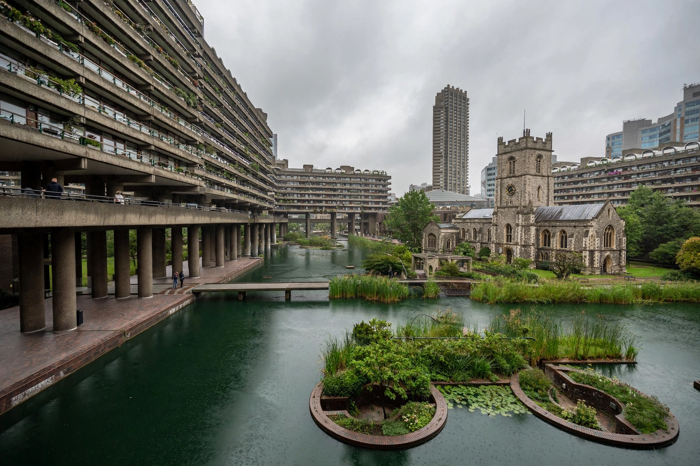

The Barbican Estate, or Barbican, is a residential complex of around 2,000 flats, maisonettes and houses in central London, England, in the City of London. It is known for its distinctive Brutalist architecture.

The area was devastated by bombing during the Second World War. The City of London Corporation decided to rebuild it as a residential quarter for professionals. Designed by architects Chamberlin, Powell and Bon, construction began in 1965 and was largely completed by 1976.
The estate comprises three 42-storey towers — Cromwell, Shakespeare and Lauderdale — and numerous low-rise blocks arranged around gardens, lakes and a raised podium that separates pedestrians from traffic. The Barbican Centre, one of Europe's largest performing arts centres, opened in 1982 within the estate.
Listed at Grade II in 2001, the Barbican is regarded as a landmark of British post-war architecture and Brutalism. It stands near the Museum of London site and remains a sought-after address.